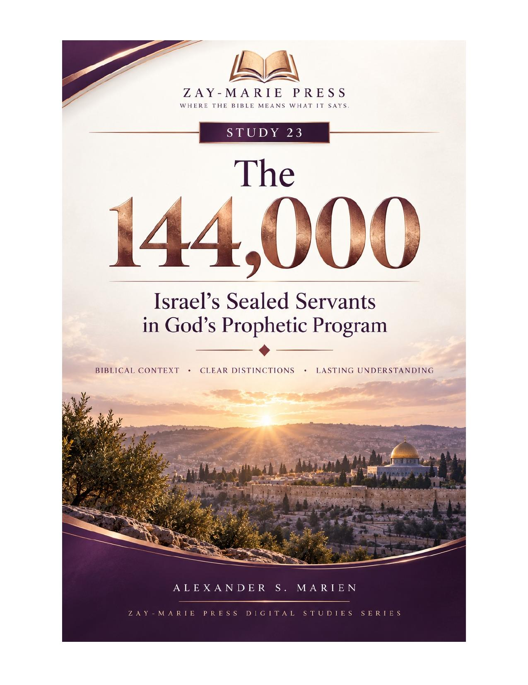
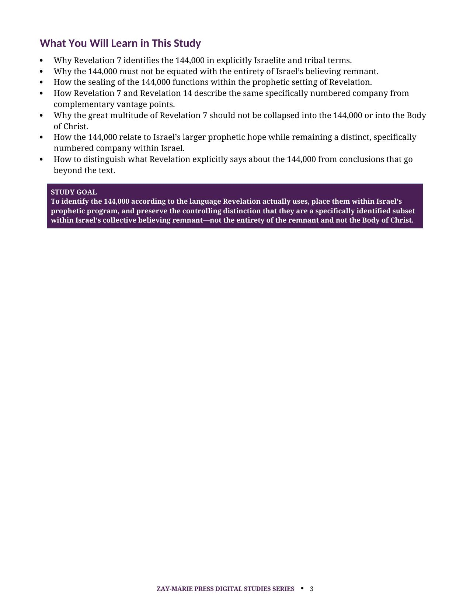
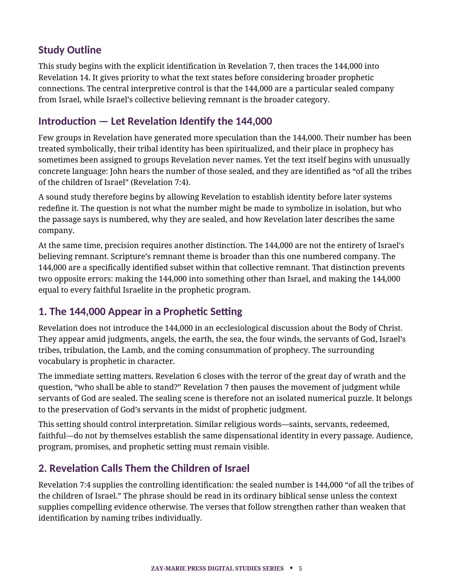
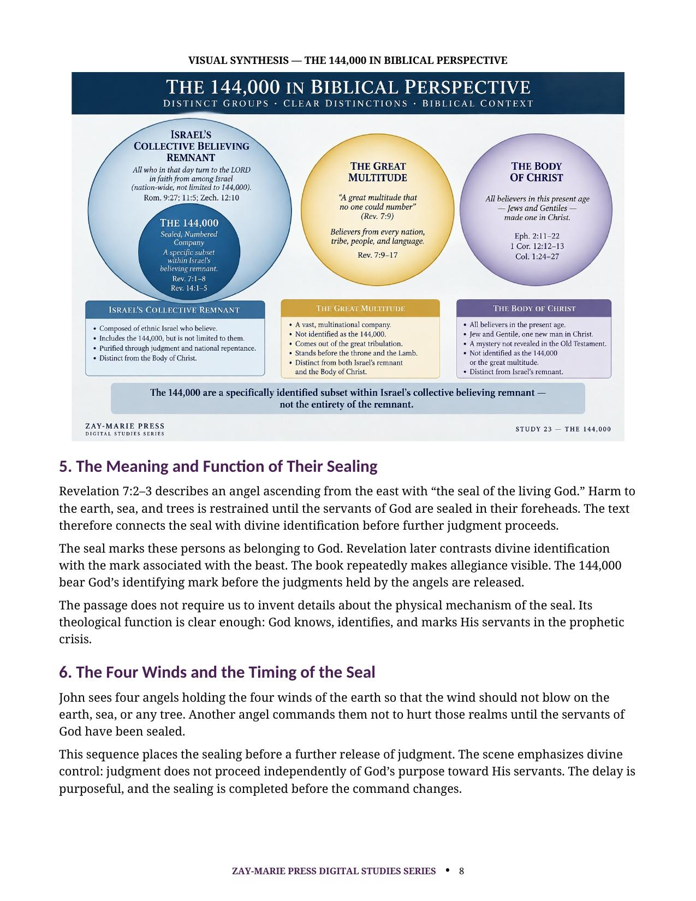
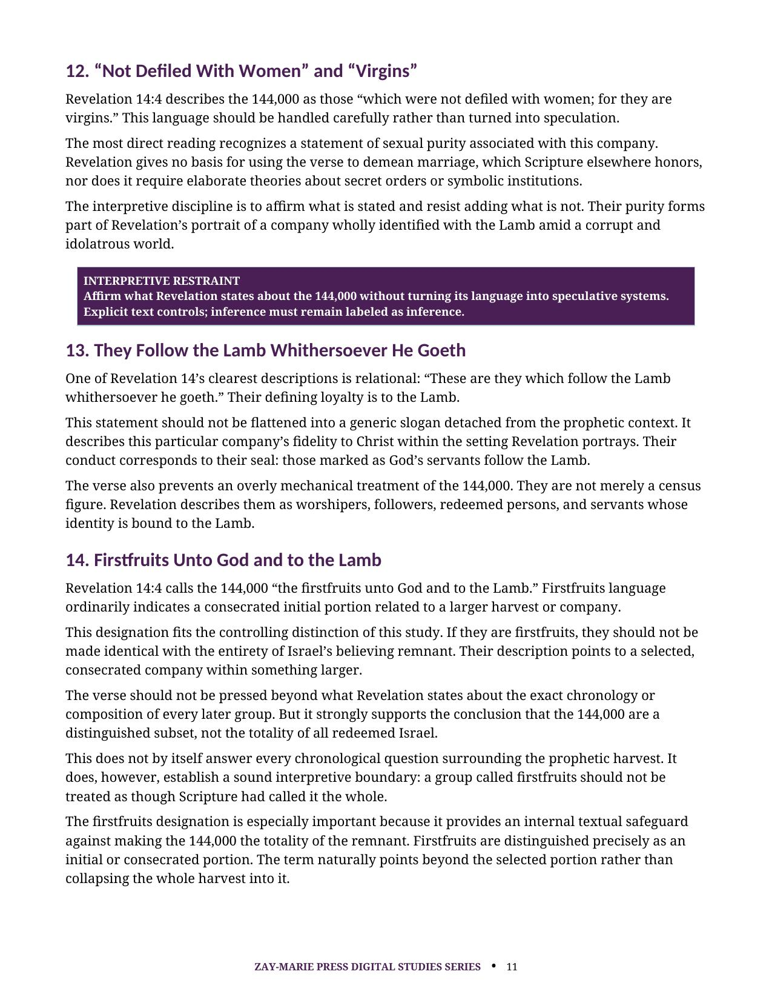

The 144,000
Israel’s Sealed Servants in God’s Prophetic Program
A Biblical Study of Revelation’s Tribal Identification, Sealing, and Distinct Companies
Revelation identifies the 144,000 with unusual precision: a numbered company sealed from the tribes of the children of Israel. Their tribal identity, sealing, and later appearance with the Lamb belong within Israel’s prophetic program.
This study follows Revelation 7 and 14 to distinguish the 144,000 from Israel’s larger believing remnant, the great multitude, and the Body of Christ. It lets Revelation’s own labels govern the conclusion.
Who Are the 144,000?
The 144,000 are neither the entirety of Israel’s believing remnant nor a symbolic title for the Body of Christ. Revelation identifies them as a specific, numbered, sealed company from Israel’s tribes.
By tracing each explicit marker—tribes, number, seal, company, Lamb, Mount Sion, firstfruits, and faultlessness—the study preserves their place within Israel’s prophetic hope without assigning to them more than Scripture states.
Read Revelation’s Identification on Its Own Terms
Revelation’s Israelite Identification
Start with Revelation 7:4, where the sealed company is identified in explicit Israelite and tribal language.
Twelve Thousand From Twelve Tribes
Follow the numbered tribal list and see why the text establishes a particular company, not an undefined symbol.
The Seal and Its Prophetic Function
Examine how the seal marks God’s servants before the further judgments described in Revelation proceed.
The 144,000 and Israel’s Remnant
Distinguish this selected company from the broader collective believing remnant within Israel.
The Great Multitude as a Distinct Company
Compare Revelation’s separate descriptions so that the great multitude is not assigned the 144,000’s identity.
Revelation 14 and the Lamb on Mount Sion
Trace the same numbered company as Revelation describes their worship, loyalty, firstfruits, and faultlessness.
Examine Revelation’s Markers for Yourself
Revelation 7:1–8
The seal, fixed number, and tribal list identify the 144,000 as servants from Israel’s tribes.
Revelation 7:9–17
The great multitude is introduced with its own description after the numbered Israelite company.
Revelation 14:1–5
The Lamb, Mount Sion, firstfruits, and faultlessness further describe the same 144,000.
Isaiah 1:9
Isaiah’s surviving seed language supplies part of Scripture’s broader remnant theme.
Zechariah 13:8–9
Zechariah portrays Israel’s purification and preservation through prophetic judgment.
Matthew 24:14–22
Christ’s Olivet teaching places tribulation and preservation within Israel’s prophetic setting.
Romans 11:1–7
Paul identifies a present believing remnant according to the election of grace.
Romans 11:25–29
Israel’s future remains joined to God’s irrevocable calling and covenant faithfulness.
Keep the Companies Distinct
“The 144,000 are a specifically identified subset within Israel’s collective believing remnant—not the entirety of the remnant and not the Body of Christ.”
Revelation gives a fixed total, repeats that same total in chapter 14, and treats the company as distinguishable from others in the vision.
Preview the Study Before You Purchase
Click any page to enlarge it for reading.
{kind=link}

What You Will Learn in This Study
Begin with the governing questions and the textual distinctions that guide the study.
{kind=link}

Revelation’s Israelite Identification
See why the number and the named tribes establish the company’s identity.
{kind=link}

Distinct Companies in Biblical Perspective
Compare Israel’s believing remnant, the great multitude, and the Body of Christ.
{kind=link}

They Follow the Lamb
Read Revelation 14’s description of this consecrated company and its loyalty to the Lamb.
A Focused Study Built for
Understanding and Teaching
Revelation 7 Examination
Read the seal, number, and tribal list together to identify the 144,000 according to the text.
Revelation 14 Examination
Trace the same company with the Lamb and consider the significance of firstfruits and faultlessness.
Israel’s Remnant Context
Place the 144,000 within Israel’s larger believing remnant without treating the two as identical.
Great Multitude Comparison
Use Revelation’s own descriptions to retain the distinction between the great multitude and the sealed servants.
Body of Christ Distinction
Keep the Body’s Mystery identity distinct from the prophetic identities described in Revelation.
Study Summary
Review the central conclusion: the 144,000 are a particular sealed company from Israel.
Key Distinctions
Retain the textual markers that preserve clarity among the remnant, great multitude, and Body of Christ.
Teaching and Discussion Tools
Use review questions, Scripture tracing, and further-study guidance for personal or group instruction.
The 144,000
Digital PDF · For personal use